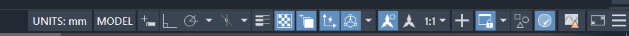

Unità di misura
Impostare e unità di misura di un disegno è utilissimo: Il disegno è in centimetri? Metri?
Quando copi qualche pezzo da un disegno all'altro, o lo usi come xref o blocco, se l'unità di misura è diversa, ma memorizzata nel file, il disegno scalerà automaticamente.
Da menù è (in inglese) format->units, come variabile è insunits . É una variabile numerica e per ogni cifra rappresenta un'unità diversa, il ché è un po' un casino, ma vi trascrivo qui di seguito le più usate da noialtri:
- 0 = Unspecified (No units)
- 4 = mm
- 5 = cm
- 6 = m
Per chi usa autoCad full, aggiungendo al file nella directory di supporto (o creandolo) acaddoc.lsp il codice
(SETVAR "modemacro" "UNITS: $(index,$(getvar,insunits),\"-,in,ft,mi,mm,cm,m,km,µin,mil,yd,A,nm,µm,dm,dam,hm,Gm,au,ly,pc\")
mostrerà l'unità di misura corrente nella status bar:

Dal codice potete anche estrapolare le ulteriori equivalenze numero=unità.
Parrebbe bello, ma non è abbastanza.
Ricordate che Autodesk è una ditta americana e il software nasce in orribili unità imperiali. L'adattamento alle unità metriche è seguito successivamente. Oltre a questa variabile, l'intero file è legato ad un sistema o l'altro. Avete presente quando cercate di copiare le proprietà di un retino da un file all'altro e quello scala in maniera completamente imprevedibile? Pare che sia dovuto al fatto che il file sia nato in untà imperiali o metriche, ovvero partendo dal modello acad (imperiale) o metrico (acadiso). Per il vostro bene usate sempre quest'ultimo, se non ne avete uno vostro (spero costruito su quello). Cambiare in seguito è un bordello.
E qui arriva un altro comando, che cerca di porrere rimedio al file nato male: dwgunits su cui tornerò in seguito (ma potete intanto digitarlo e rispondere alle domande).